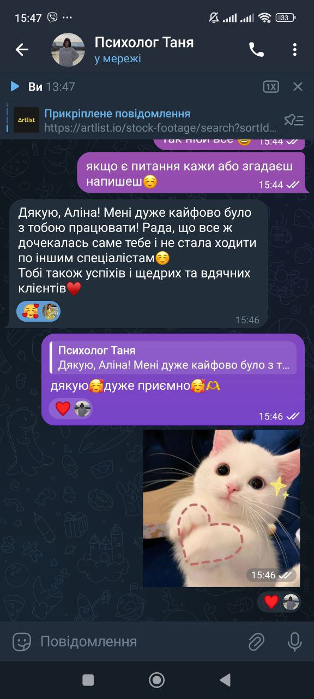
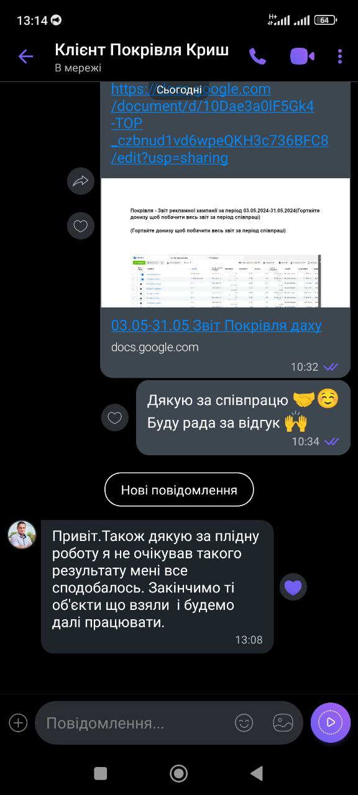

Шукаю точки росту
Аналізую не лише рекламний кабінет, а й продукт, воронку, сайт, Instagram та роботу менеджерів.
Meta Ads · Google Ads · Стратегія
Допомагаю запускати, аналізувати й оптимізувати рекламу. Шукаю точки росту та масштабую проєкти, які вперлися у «стелю».
Працюю з рекламними бюджетами від $600/міс.
Не хаос, а система
Я дивлюся на весь шлях клієнта: від продукту й першого дотику до заявки, продажу та повторної покупки.
Аналізую не лише рекламний кабінет, а й продукт, воронку, сайт, Instagram та роботу менеджерів.
Перебудовую зв’язки, коли старі рішення перестали працювати, а бізнес уперся у стелю результатів.
Працюю з аналітикою та цифрами. Кожна нова дія має спиратися на перевірену гіпотезу.
Якщо проблема в офері, конверсії сайту чи продажах, а не в рекламі, кажу про це прямо.
Формати роботи
01
Точковий формат
Для кого: для тих, кому потрібен чіткий план і незалежний погляд на ситуацію.
Розбираємо проєкт від А до Я: кабінети, ідеї, слабкі місця та пріоритети. Після зустрічі залишається покроковий план дій.
Записатися ↗02
Діагностика
Для кого: для бізнесів, які вже запускають рекламу, але не бачать очікуваного результату.
Перевіряю кампанії, аудиторії, креативи та посадкові сторінки. Знаходжу, куди непомітно зливається бюджет.
Замовити аудит ↗03
Ріст
Для кого: для проєктів, які працюють у плюс, але вперлися у стелю.
Переформатовую стратегію, тестую нові гіпотези, покращую вартість ліда та готую систему до більших обсягів продажів.
Обговорити ↗04
Старт
Для кого: для бізнесу, якому потрібно з нуля побудувати правильний фундамент.
Стратегія, налаштування Meta Ads або Google Ads, теплий старт, базова аналітика та підтримка після запуску.
Запустити рекламу ↗05
Преміальний формат
Для кого: для системного бізнесу, який хоче делегувати трафік під ключ.
Щоденний менеджмент, постійні тести креативів, глибока аналітика, звіти та спільна робота над масштабуванням прибутку.
Подати заявку ↗Спікерство та навчання
Виступаю для SMM-агенцій, закритих клубів, курсів і бізнес-спільнот. Ділюся практикою з ніш меблів, юридичних послуг, beauty та e-commerce — без «води».
Запросити як спікеркуЧому бюджет від $600/міс.
Цей поріг дає Meta та Google достатньо сигналів для навчання, а нам — базу для аналізу. Менші бюджети часто перетворюють тестування на випадковий набір дій, за яким складно ухвалювати рішення.
Звіти 2025–2026
У фінальній версії тут будуть лише підтверджені цифри зі звітів, без прикрашання показників.
Юридичні послуги
КАСКАД01ЗадачаЗафіксувати бізнес-ціль і KPI до запуску.
02РеалізованоСтруктура кампаній, аналітика та цикл тестів.
03РезультатПідтверджені дані будуть додані зі звіту.
Меблі
Столи / стільці01ЗадачаВизначити товари та сегменти з потенціалом росту.
02РеалізованоКаталог, ретаргетинг і нова логіка креативів.
03РезультатROI та заявки будуть додані зі звіту.
E-commerce
Ліжка01ЗадачаЗнайти стабільні зв’язки для масштабування.
02РеалізованоНові гіпотези, сегменти та контроль якості лідів.
03РезультатОкупність буде додана з фінального звіту.
Відгуки клієнтів
Не постановочні цитати, а живі повідомлення після консультацій, запусків і спільної роботи.
«Запити гарні, працюємо»
«Дякую за твою увагу, консультацію і підтримку»

«Мені дуже кайфово було з тобою працювати»

«Не очікував такого результату, мені все сподобалось»
Перевіримо очікування
Підходить
Не підходить
FAQ
За продаж відповідають продукт, офер, ціна та робота менеджера. Я відповідаю за системний цільовий трафік, прозорі KPI й керовану оптимізацію.
Ні. Meta Ads і Google Ads підбираються індивідуально під нішу, попит, цикл рішення та задачу бізнесу.
Так. На консультації розбираємо ситуацію від А до Я та формуємо конкретний план, який можна реалізувати самостійно.
Почнемо з контексту
П’ять коротких відповідей допоможуть одразу зрозуміти задачу й запропонувати доречний формат.